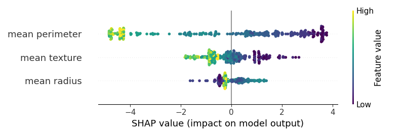

Note
Click here to download the full example code
Shap - Main 01
Out:
C:\Users\kelda\Desktop\repositories\virtualenvs\venv-py39-oss1017\lib\site-packages\xgboost\sklearn.py:1224: UserWarning:
The use of label encoder in XGBClassifier is deprecated and will be removed in a future release. To remove this warning, do the following: 1) Pass option use_label_encoder=False when constructing XGBClassifier object; and 2) Encode your labels (y) as integers starting with 0, i.e. 0, 1, 2, ..., [num_class - 1].
[11:25:15] WARNING: C:/Users/Administrator/workspace/xgboost-win64_release_1.5.1/src/learner.cc:1115: Starting in XGBoost 1.3.0, the default evaluation metric used with the objective 'binary:logistic' was changed from 'error' to 'logloss'. Explicitly set eval_metric if you'd like to restore the old behavior.
Kernel type: <class 'shap.explainers._tree.Tree'>
.values =
array([[ 0.01222555, 1.37204514, -4.45924262],
[-0.03614123, -0.05402528, -4.71252587],
[-0.04250672, -0.67383818, -4.2542946 ],
...,
[ 0.34987633, 0.35588726, 2.19385727],
[-0.02678569, -0.06291732, -4.71763066],
[-0.04250672, -0.67383818, -4.2542946 ]])
.base_values =
array([0.35041043, 0.35041043, 0.35041043, 0.35041043, 0.35041043,
0.35041043, 0.35041043, 0.35041043, 0.35041043, 0.35041043,
0.35041043, 0.35041043, 0.35041043, 0.35041043, 0.35041043,
0.35041043, 0.35041043, 0.35041043, 0.35041043, 0.35041043,
0.35041043, 0.35041043, 0.35041043, 0.35041043, 0.35041043,
0.35041043, 0.35041043, 0.35041043, 0.35041043, 0.35041043,
0.35041043, 0.35041043, 0.35041043, 0.35041043, 0.35041043,
0.35041043, 0.35041043, 0.35041043, 0.35041043, 0.35041043,
0.35041043, 0.35041043, 0.35041043, 0.35041043, 0.35041043,
0.35041043, 0.35041043, 0.35041043, 0.35041043, 0.35041043,
0.35041043, 0.35041043, 0.35041043, 0.35041043, 0.35041043,
0.35041043, 0.35041043, 0.35041043, 0.35041043, 0.35041043,
0.35041043, 0.35041043, 0.35041043, 0.35041043, 0.35041043,
0.35041043, 0.35041043, 0.35041043, 0.35041043, 0.35041043,
0.35041043, 0.35041043, 0.35041043, 0.35041043, 0.35041043,
0.35041043, 0.35041043, 0.35041043, 0.35041043, 0.35041043,
0.35041043, 0.35041043, 0.35041043, 0.35041043, 0.35041043,
0.35041043, 0.35041043, 0.35041043, 0.35041043, 0.35041043,
0.35041043, 0.35041043, 0.35041043, 0.35041043, 0.35041043,
0.35041043, 0.35041043, 0.35041043, 0.35041043, 0.35041043,
0.35041043, 0.35041043, 0.35041043, 0.35041043, 0.35041043,
0.35041043, 0.35041043, 0.35041043, 0.35041043, 0.35041043,
0.35041043, 0.35041043, 0.35041043, 0.35041043, 0.35041043,
0.35041043, 0.35041043, 0.35041043, 0.35041043, 0.35041043,
0.35041043, 0.35041043, 0.35041043, 0.35041043, 0.35041043,
0.35041043, 0.35041043, 0.35041043, 0.35041043, 0.35041043,
0.35041043, 0.35041043, 0.35041043, 0.35041043, 0.35041043,
0.35041043, 0.35041043, 0.35041043, 0.35041043, 0.35041043,
0.35041043, 0.35041043, 0.35041043, 0.35041043, 0.35041043,
0.35041043, 0.35041043, 0.35041043, 0.35041043, 0.35041043,
0.35041043, 0.35041043, 0.35041043, 0.35041043, 0.35041043,
0.35041043, 0.35041043, 0.35041043, 0.35041043, 0.35041043,
0.35041043, 0.35041043, 0.35041043, 0.35041043, 0.35041043,
0.35041043, 0.35041043, 0.35041043, 0.35041043, 0.35041043,
0.35041043, 0.35041043, 0.35041043, 0.35041043, 0.35041043,
0.35041043, 0.35041043, 0.35041043, 0.35041043, 0.35041043,
0.35041043, 0.35041043, 0.35041043, 0.35041043, 0.35041043,
0.35041043, 0.35041043, 0.35041043, 0.35041043, 0.35041043,
0.35041043, 0.35041043, 0.35041043, 0.35041043, 0.35041043,
0.35041043, 0.35041043, 0.35041043, 0.35041043, 0.35041043,
0.35041043, 0.35041043, 0.35041043, 0.35041043, 0.35041043,
0.35041043, 0.35041043, 0.35041043, 0.35041043, 0.35041043,
0.35041043, 0.35041043, 0.35041043, 0.35041043, 0.35041043,
0.35041043, 0.35041043, 0.35041043, 0.35041043, 0.35041043,
0.35041043, 0.35041043, 0.35041043, 0.35041043, 0.35041043,
0.35041043, 0.35041043, 0.35041043, 0.35041043, 0.35041043,
0.35041043, 0.35041043, 0.35041043, 0.35041043, 0.35041043,
0.35041043, 0.35041043, 0.35041043, 0.35041043, 0.35041043,
0.35041043, 0.35041043, 0.35041043, 0.35041043, 0.35041043,
0.35041043, 0.35041043, 0.35041043, 0.35041043, 0.35041043,
0.35041043, 0.35041043, 0.35041043, 0.35041043, 0.35041043,
0.35041043, 0.35041043, 0.35041043, 0.35041043, 0.35041043,
0.35041043, 0.35041043, 0.35041043, 0.35041043, 0.35041043,
0.35041043, 0.35041043, 0.35041043, 0.35041043, 0.35041043,
0.35041043, 0.35041043, 0.35041043, 0.35041043, 0.35041043,
0.35041043, 0.35041043, 0.35041043, 0.35041043, 0.35041043,
0.35041043, 0.35041043, 0.35041043, 0.35041043, 0.35041043,
0.35041043, 0.35041043, 0.35041043, 0.35041043, 0.35041043,
0.35041043, 0.35041043, 0.35041043, 0.35041043, 0.35041043,
0.35041043, 0.35041043, 0.35041043, 0.35041043, 0.35041043,
0.35041043, 0.35041043, 0.35041043, 0.35041043, 0.35041043,
0.35041043, 0.35041043, 0.35041043, 0.35041043, 0.35041043,
0.35041043, 0.35041043, 0.35041043, 0.35041043, 0.35041043,
0.35041043, 0.35041043, 0.35041043, 0.35041043, 0.35041043,
0.35041043, 0.35041043, 0.35041043, 0.35041043, 0.35041043,
0.35041043, 0.35041043, 0.35041043, 0.35041043, 0.35041043,
0.35041043, 0.35041043, 0.35041043, 0.35041043, 0.35041043,
0.35041043, 0.35041043, 0.35041043, 0.35041043, 0.35041043,
0.35041043, 0.35041043, 0.35041043, 0.35041043, 0.35041043,
0.35041043, 0.35041043, 0.35041043, 0.35041043, 0.35041043,
0.35041043, 0.35041043, 0.35041043, 0.35041043, 0.35041043,
0.35041043, 0.35041043, 0.35041043, 0.35041043, 0.35041043,
0.35041043, 0.35041043, 0.35041043, 0.35041043, 0.35041043,
0.35041043, 0.35041043, 0.35041043, 0.35041043, 0.35041043,
0.35041043, 0.35041043, 0.35041043, 0.35041043, 0.35041043,
0.35041043, 0.35041043, 0.35041043, 0.35041043, 0.35041043,
0.35041043, 0.35041043, 0.35041043, 0.35041043, 0.35041043,
0.35041043, 0.35041043, 0.35041043, 0.35041043, 0.35041043,
0.35041043, 0.35041043, 0.35041043, 0.35041043, 0.35041043,
0.35041043, 0.35041043, 0.35041043, 0.35041043, 0.35041043,
0.35041043, 0.35041043, 0.35041043, 0.35041043, 0.35041043,
0.35041043, 0.35041043, 0.35041043, 0.35041043, 0.35041043,
0.35041043, 0.35041043, 0.35041043, 0.35041043, 0.35041043,
0.35041043, 0.35041043, 0.35041043, 0.35041043, 0.35041043,
0.35041043, 0.35041043, 0.35041043, 0.35041043, 0.35041043,
0.35041043, 0.35041043, 0.35041043, 0.35041043, 0.35041043,
0.35041043, 0.35041043, 0.35041043, 0.35041043, 0.35041043,
0.35041043, 0.35041043, 0.35041043, 0.35041043, 0.35041043,
0.35041043, 0.35041043, 0.35041043, 0.35041043, 0.35041043,
0.35041043, 0.35041043, 0.35041043, 0.35041043, 0.35041043,
0.35041043, 0.35041043, 0.35041043, 0.35041043, 0.35041043,
0.35041043, 0.35041043, 0.35041043, 0.35041043, 0.35041043,
0.35041043, 0.35041043, 0.35041043, 0.35041043, 0.35041043,
0.35041043, 0.35041043, 0.35041043, 0.35041043, 0.35041043,
0.35041043, 0.35041043, 0.35041043, 0.35041043, 0.35041043,
0.35041043, 0.35041043, 0.35041043, 0.35041043, 0.35041043,
0.35041043, 0.35041043, 0.35041043, 0.35041043, 0.35041043,
0.35041043, 0.35041043, 0.35041043, 0.35041043, 0.35041043,
0.35041043, 0.35041043, 0.35041043, 0.35041043, 0.35041043,
0.35041043, 0.35041043, 0.35041043, 0.35041043, 0.35041043])
.data =
array([[ 17.99, 10.38, 122.8 ],
[ 20.57, 17.77, 132.9 ],
[ 19.69, 21.25, 130. ],
...,
[ 12.47, 17.31, 80.45],
[ 18.49, 17.52, 121.3 ],
[ 20.59, 21.24, 137.8 ]])
shap_values (shape): (500, 3)
<IPython.core.display.HTML object>
[[-0.09027431 -0.58367383 -4.20171465]
[-0.566376 0.93458731 3.56861343]
[ 0.32619197 2.8111843 -2.96783778]
...
[ 0.78497741 -0.03524856 -2.36360644]
[ 0.24668202 -0.03663879 0.63015682]
[ 0.2185051 1.57475921 -3.67290018]]
None
Trying to register the cmap 'rocket' which already exists.
Trying to register the cmap 'rocket_r' which already exists.
Trying to register the cmap 'mako' which already exists.
Trying to register the cmap 'mako_r' which already exists.
Trying to register the cmap 'icefire' which already exists.
Trying to register the cmap 'icefire_r' which already exists.
Trying to register the cmap 'vlag' which already exists.
Trying to register the cmap 'vlag_r' which already exists.
Trying to register the cmap 'flare' which already exists.
Trying to register the cmap 'flare_r' which already exists.
Trying to register the cmap 'crest' which already exists.
Trying to register the cmap 'crest_r' which already exists.
'\nprint(sv)\n#sns.swarmplot(data=sv, x=0, y=\'level_1\', color=\'viridis\', palette=\'viridis\')\n#sns.stripplot(data=sv, x=0, y=\'level_1\', color=\'viridis\', palette=\'viridis\')\n#plt.show()\nimport sys\nsys.exit()\n#sns.swarmplot(x=)\n\nimport sys\nsys.exit()\n\n#html = f"<head>{shap.getjs()}</head><body>"\n# Bee swarm\n# .. note: unexpected algorithm matplotlib!\n# .. note: does not return an object!\nplot_bee = shap.plots.beeswarm(shap_values, show=False)\n\n# Sow\nprint("\nBEE")\nprint(plot_bee)\n\n#print(f)\n# Waterfall\n# .. note: not working!\n#shap.plots.waterfall(shap_values[0], max_display=14)\n\n# Force plot\n# .. note: not working!\nplot_force = shap.plots.force(explainer.expected_value,\n explainer.shap_values(X_train), X_train,\n matplotlib=False, show=False)\n\n# Show\nprint("\nFORCE:")\nprint(plot_force)\nprint(plot_force.html())\nprint(shap.save_html(\'e.html\', plot_force))\n'
6 # Generic
7 import numpy as np
8 import pandas as pd
9 import matplotlib.pyplot as plt
10
11 # Sklearn
12 from sklearn.model_selection import train_test_split
13 from sklearn.datasets import load_iris
14 from sklearn.datasets import load_breast_cancer
15 from sklearn.naive_bayes import GaussianNB
16 from sklearn.linear_model import LogisticRegression
17 from sklearn.tree import DecisionTreeClassifier
18 from sklearn.ensemble import RandomForestClassifier
19
20 # Xgboost
21 from xgboost import XGBClassifier
22
23 # ----------------------------------------
24 # Load data
25 # ----------------------------------------
26 # Seed
27 seed = 0
28
29 # Load dataset
30 bunch = load_iris()
31 bunch = load_breast_cancer()
32 features = list(bunch['feature_names'])
33
34 # Create DataFrame
35 data = pd.DataFrame(data=np.c_[bunch['data'], bunch['target']],
36 columns=features + ['target'])
37
38 # Create X, y
39 X = data[bunch['feature_names']]
40 y = data['target']
41
42 # Filter
43 X = X.iloc[:500, :3]
44 y = y.iloc[:500]
45
46
47 # Split dataset
48 X_train, X_test, y_train, y_test = \
49 train_test_split(X, y, random_state=seed)
50
51
52 # ----------------------------------------
53 # Classifiers
54 # ----------------------------------------
55 # Train classifier
56 gnb = GaussianNB()
57 llr = LogisticRegression()
58 dtc = DecisionTreeClassifier(random_state=seed)
59 rfc = RandomForestClassifier(random_state=seed)
60 xgb = XGBClassifier(
61 min_child_weight=0.005,
62 eta= 0.05, gamma= 0.2,
63 max_depth= 4,
64 n_estimators= 100)
65
66 # Select one
67 clf = xgb
68
69 # Fit
70 clf.fit(X_train, y_train)
71
72 # ----------------------------------------
73 # Find shap values
74 # ----------------------------------------
75 # Import
76 import shap
77
78 """
79 # Create shap explainer
80 if isinstance(clf,
81 (DecisionTreeClassifier,
82 RandomForestClassifier,
83 XGBClassifier)):
84 # Set Tree explainer
85 explainer = shap.TreeExplainer(clf)
86 elif isinstance(clf, int):
87 # Set NN explainer
88 explainer = shap.DeepExplainer(clf)
89 else:
90 # Set generic kernel explainer
91 explainer = shap.KernelExplainer(clf.predict_proba, X_train)
92 """
93
94 # Get generic explainer
95 explainer = shap.Explainer(clf, X_train)
96
97 # Show kernel type
98 print("\nKernel type: %s" % type(explainer))
99
100 # Get shap values
101 shap_values = explainer(X)
102
103 print(shap_values)
104
105 # For interactions!!
106 # https://github.com/slundberg/shap/issues/501
107
108 # Get shap values
109 #shap_values = \
110 # explainer.shap_values(X_train)
111 #shap_interaction_values = \
112 # explainer.shap_interaction_values(X_train)
113
114 # Show information
115 print("shap_values (shape): %s" % \
116 str(shap_values.shape))
117 #print("shap_values_interaction (shape): %s" % \
118 # str(shap_interaction_values.shape))
119
120
121 # ----------------------------------------
122 # Visualize
123 # ----------------------------------------
124 # Initialise
125 shap.initjs()
126
127 """
128 # Dependence plot
129 shap.dependence_plot(0, shap_values,
130 X_train, interaction_index=None, dot_size=5,
131 alpha=0.5, color='#3F75BC', show=False)
132 plt.tight_layout()
133 """
134
135 print(explainer.shap_values(X_train))
136
137 # Summary plot
138 plot_summary = shap.summary_plot( \
139 explainer.shap_values(X_train),
140 X_train, cmap='viridis',
141 show=False)
142
143 plt.tight_layout()
144 plt.show()
145
146 print(plot_summary)
147
148
149 import seaborn as sns
150 sv = explainer.shap_values(X_train)
151 sv = pd.DataFrame(sv, columns=X.columns)
152 sv = sv.stack().reset_index()
153 sv['val'] = X_train.stack().reset_index()[0]
154
155 #import plotly.express as px
156
157 #f = px.strip(data_frame=sv, x=0, y='level_1', color='val')
158 #f.show()
159
160 """
161 print(sv)
162 #sns.swarmplot(data=sv, x=0, y='level_1', color='viridis', palette='viridis')
163 #sns.stripplot(data=sv, x=0, y='level_1', color='viridis', palette='viridis')
164 #plt.show()
165 import sys
166 sys.exit()
167 #sns.swarmplot(x=)
168
169 import sys
170 sys.exit()
171
172 #html = f"<head>{shap.getjs()}</head><body>"
173 # Bee swarm
174 # .. note: unexpected algorithm matplotlib!
175 # .. note: does not return an object!
176 plot_bee = shap.plots.beeswarm(shap_values, show=False)
177
178 # Sow
179 print("\nBEE")
180 print(plot_bee)
181
182 #print(f)
183 # Waterfall
184 # .. note: not working!
185 #shap.plots.waterfall(shap_values[0], max_display=14)
186
187 # Force plot
188 # .. note: not working!
189 plot_force = shap.plots.force(explainer.expected_value,
190 explainer.shap_values(X_train), X_train,
191 matplotlib=False, show=False)
192
193 # Show
194 print("\nFORCE:")
195 print(plot_force)
196 print(plot_force.html())
197 print(shap.save_html('e.html', plot_force))
198 """
Total running time of the script: ( 0 minutes 4.442 seconds)